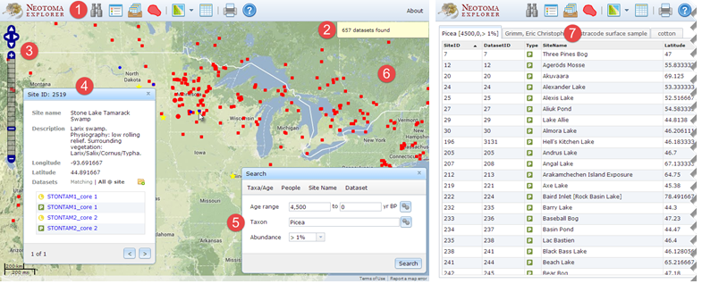
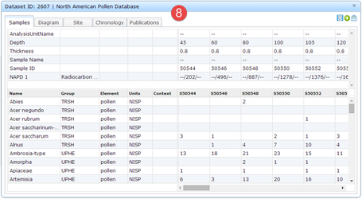
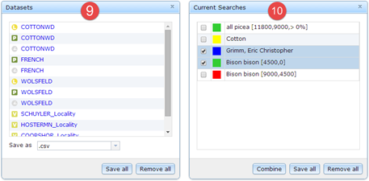
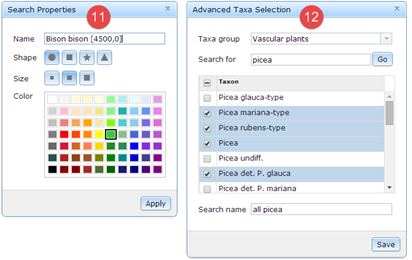

- Application toolbar: open and/or launch main tools and application windows
- Messages: view status of application activities
- Map controls: pan and zoom around the map
- Site inspector: click on a mapped site to view summary metadata; access detailed datasets matching search criteria as well as other datasets associated with a site
- Search: query the database for datasets that meet specified spatial, temporal, and metadata criteria
- Map: view search results according to the locations of the sites with which they are associated
- Tables: view search results in tabular format
- Dataset inspector: view detailed data spreadsheet and associated metadata, chronologies, publications, and diagrams

- Dataset tray: save datasets of interest for later viewing and download
- Search list: manage display of search results as map layers and tables; combine search results with AND/OR operations into new layers

- Search properties: change name, shape, size, and color of map symbols for a search
- Advanced taxa options: search for taxa names by partial matching to a specified string

Created with the Personal Edition of HelpNDoc: Easily create Web Help sites